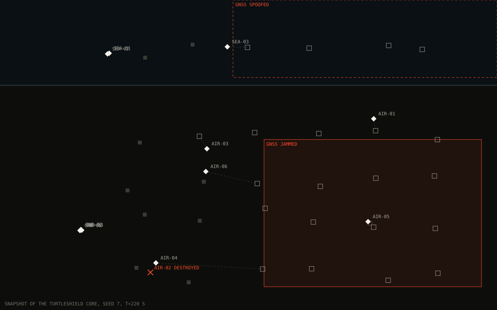

Nine machines. One AI on every one of them.
Five aircraft, two ground robots and two boats, all running TurtleShield and watched from Turtle Eyes. No vehicle waits for base and none of them is the boss.
TURTLESHIELD CORE · LINK · NAV · QUORUM
TurtleShield AI · Turtle Eyes
TurtleShield keeps drones, ground robots and boats working as one team when GPS is jammed and the radio drops out. Turtle Eyes is the console its operators supervise it from. The film is Rendered from the TurtleShield simulator, not flight footage.
01 · The problem
A cheap transmitter drowns satellite signals over kilometres. Every vehicle in that area loses its position at the same moment, and the error grows every second after.
A stronger fake signal is worse than none. The receiver reports a confident position that is wrong, and drags a vehicle off course slowly enough to look plausible.
Radios are jammed, links are cut and bandwidth collapses. A team that needs a base station to coordinate stops being a team the moment that link is gone.
02 · The mission
Each step replays the moment in the film where it happens, and says what TurtleShield does about it.
Scroll to advance
Swipe the cards below the picture
Five aircraft, two ground robots and two boats, all running TurtleShield and watched from Turtle Eyes. No vehicle waits for base and none of them is the boss.
Every vehicle now tracks where it probably is, and how sure it is. As that doubt grows, the aircraft take looser positions instead of pretending nothing changed.
Direct links fail. Messages hop through whichever vehicles can still hear each other. Nothing depends on one link staying up.
The others notice the silence, wait until its claim on the work has expired, then share that work between them. Nobody has to tell them.
TurtleShield plans and reports. The operator in Turtle Eyes supervises, and can pause, stop or recall every vehicle at any time. There is no weapon employment in either product.
03 · Live
Twenty aircraft launch, assemble, fly in formation, split into two groups, search, meet again and come home. Introduce failures and watch the swarm keep going. The decisions that matter are made by TurtleShield’s own code, compiled from commit b04e493 and running in your browser. The formation shapes and the mission script around them are demonstration code written for this page.
Loading the TurtleShield core…
This browser cannot run the live simulation (it needs WebAssembly and Web Workers). Below is a frame of it: twenty aircraft split into two groups over the search area, one group in formation, lanes assigned, one aircraft lost and its lane taken over.

TurtleShield code, unchanged: which aircraft flies which search lane and who takes a lost aircraft’s lane (CBBA); when a silent aircraft counts as lost; what a degraded or cut-off aircraft may still do, including how much it widens its spacing; what a group of this size may still do; the separation monitor that makes aircraft climb to a new layer; peer-aided navigation without GPS; and the assembly and rendezvous rings.
Written for this page: the mission phases, the wedge, V, line and column shapes, the leader-follower steering, the radio and GPS models, and the scenario scripts. The search area is abstract. This is a browser simulation, not a flight result: the largest formation TurtleShield has flown in simulation is the 8 aircraft in Evidence below. The same seed always gives the same run.
04 · TurtleShield AI
Every drone already flies itself. What breaks under jamming is the team. TurtleShield is the coordination layer on every vehicle: one shared picture of the world, one plan, and rules for what each vehicle may still do as things degrade.
It sits on top of the autopilot. Neither commit that added a second autopilot brand changed a file in the coordination core. That brand, ArduPilot, has only been tested standing still so far.
Fixed-wing aircraft, ground robots and surface boats share one plan and hand work to each other across domains.
A vehicle that cannot reliably coordinate takes on no new commitments. One that cannot vouch for its position is ineligible for work that needs a precise one. A pair that cannot out-vote a liar gives up tight formation. The rules are written down and tested, not improvised.
Designed for an NVIDIA Jetson Orin next to a Cube Orange flight controller, with no base station in the loop.
05 · Turtle Eyes
Turtle Eyes is the console operators run a TurtleShield team from. The console beside the live mission above is Turtle Eyes supervising that swarm: status, groups, the event log, one aircraft’s telemetry, and the decisions it leaves to a person. Nothing changes phase until someone holds the button down. Three choices define it, and each is deliberate.
The swarm does not wait for the console to act, so losing the console does not stop a mission while the vehicles can still hear each other. The operator can pause, stop or recall every vehicle at any time.
It carries its own maps and runs on a rugged laptop with no internet connection. A Rust trusted core handles credentials, roles and the audit log.
There is nothing in Turtle Eyes that can command an effector, and nothing in TurtleShield that employs a weapon. That is written into both products’ scope.
06 · Evidence
Each figure below is recounted from the TurtleShield repository by a script before this page can be published. If the repository disagrees, the page does not ship.
| Figure | Value | How it was measured | Source |
|---|---|---|---|
| Test missions flown in simulation | 768 | 555 passed, 141 failed, 72 skipped, across 114 campaigns. Every result row recounted. | Simulation |
| Orders from our software accepted by the autopilot | 2,000+ | Counted once from recorded runs. The logs behind it are not all kept, so unlike the other figures here we cannot recount it today. | Simulation |
| Aircraft in tight formation | 8 | All six runs passed the separation check. That check measures distance in three dimensions, so side-by-side spacing is still unmeasured. We treat it as an open defect, not a result. | Simulation |
| Position error without GPS | 396–750 m → 25.5–39.0 m | After one day of fixes, from a written report and two named campaigns. Still not good enough to rely on. | Simulation |
| Core files changed by the two adapter commits | 0 | Counted from the repository history. Core edits in that period belong to a separate terrain-following change. | Code history |
| Problems written up with their causes | 149 | 67 closed, 82 still not closed: 46 open and 36 fixed but not yet proven. | Bug log |
| Flights on a real aircraft | 0 | None yet. The first is planned for the next few weeks. | Flight |
07 · Status
Validated in simulation and on a real flight controller wired to a simulator. Flight campaign pending: we have not flown a real aircraft yet, and you should hear that from us before anything else.
Still open: navigation without GPS is not accurate enough yet, each vehicle uses about 33 times the radio capacity we budget for, and some backup behaviours are written and tested but not yet switched on.
Nidhip SharmaFounder, Homingvector
A safety pilot on standby, every bench check done first.
Radio use brought down to budget. Real numbers replace simulated ones.
Backup behaviours switched on. The core idea, tested for real.
Operated through Turtle Eyes and signed off by someone who watched.
08 · Contact
We are raising a pre-seed round to take TurtleShield from simulation to a field trial that someone outside the company signs off. If you fly drones, build them, or back the people who do, write directly.